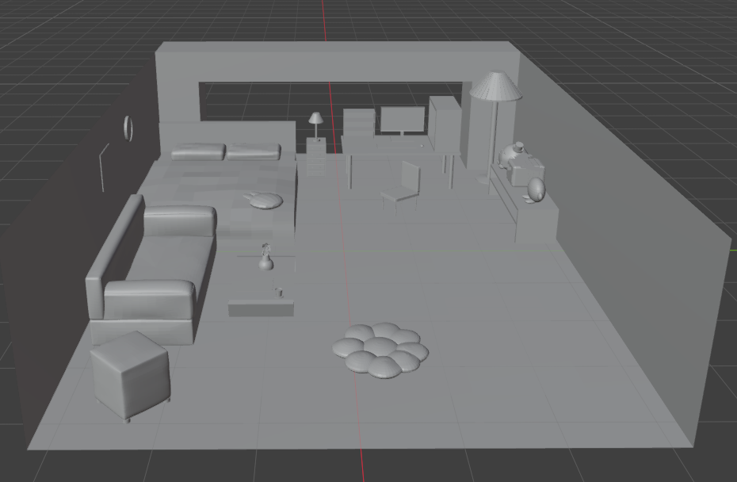
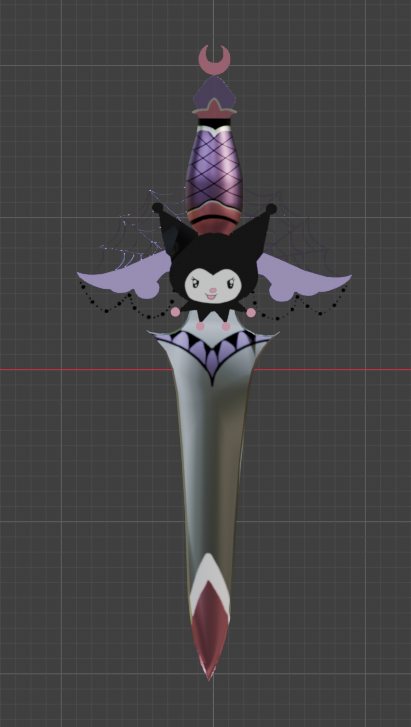
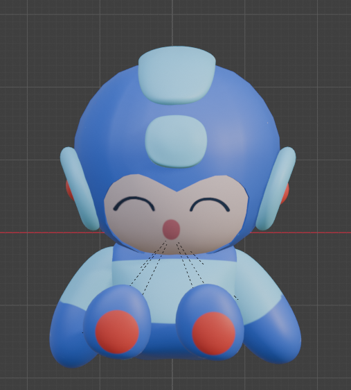
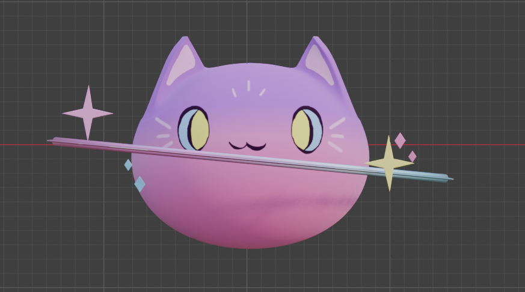
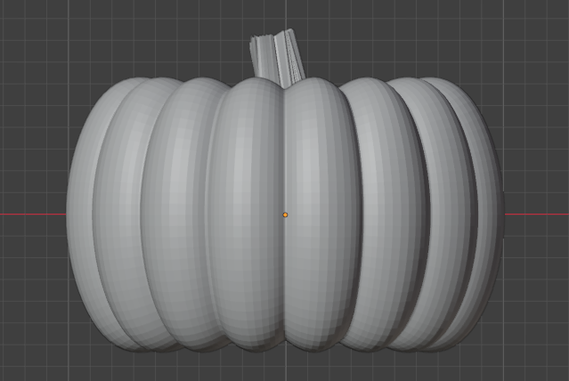
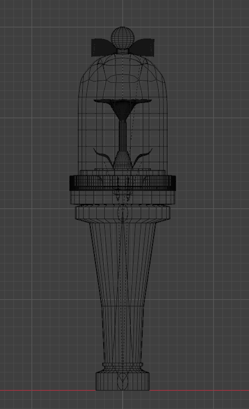
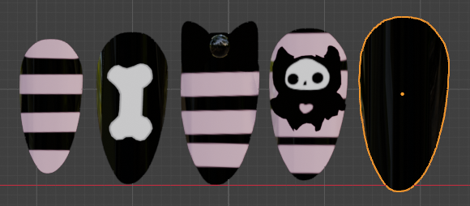

Environment • Blender
Bedroom
A stylized bedroom environment modeled in Blender, featuring furniture, a PC setup, decorative plushies, and other interior props.
3D Creation • Blender
A collection of things I've made in Blender, including a bedroom scene, a pumpkin, and other models and assets. I create 3D work with game projects in mind, including experiments with assets for Unity.
Eight projects, each with a short description and image. Click an image to view it larger.

Environment • Blender
A stylized bedroom environment modeled in Blender, featuring furniture, a PC setup, decorative plushies, and other interior props.

Handheld Prop • Blender & Unity
A stylized Kuromi-inspired blade modeled in Blender from a 2D visual reference, then imported into Unity and used as a handheld prop.

Animated Head Prop • Blender & Unity
Modeled after a Mega Man plush, animated in Blender, and brought into Unity as a prop that sits on a character’s head.

Animated VRChat Prop • Blender & Unity
A pastel cat prop modeled from a 2D reference, with an animated orbiting ring and audio-reactive effects. It was imported into Unity for use in VRChat.

Prop • Blender
A simple pumpkin modeled in Blender and later reused as a prop in VRChat.

Handheld Prop • Blender
Modeled an ILLIT lightstick as a handheld prop. This wireframe view shows the structure beneath its cover, which has a glass-like material in the finished version.

Avatar Accessory • Blender
A set of 3D nails modeled to be worn on an avatar’s hands.
Explore my web and game development work.